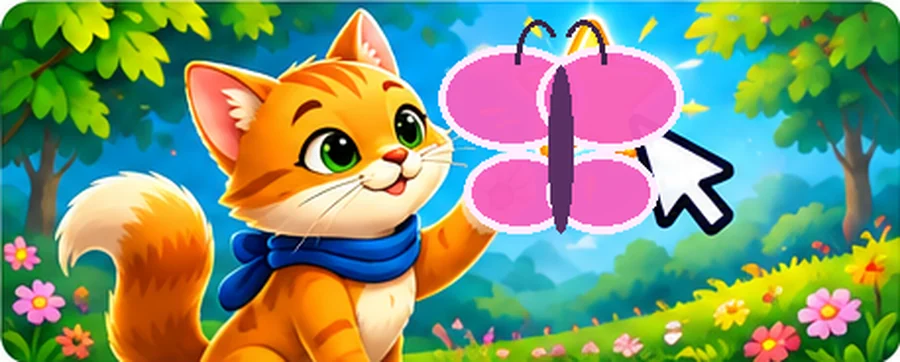

1. Спіймай метелика
Натисніть на метелика, щоб змінити його позицію.
⌨️ Відкрити заготовку коду
import pgzrun
WIDTH = 600
HEIGHT = 400
import random
x, y = 180, 180
clicks = 0
def on_mouse_down(pos):
global x, y, clicks
if (pos[0] - x)**2 + (pos[1] - y)**2 < 35**2:
clicks += 1
# TODO: перемістіть ціль після влучання
def draw():
screen.fill("lightcyan")
screen.draw.filled_circle((x, y), 35, "tomato")
screen.draw.text(f"Влучань: {clicks}", (20, 20), color="black")
# TODO: додайте другу деталь
pgzrun.go()Що дописати
- Додайте реакцію лише на влучання.
- Змініть щонайменше два параметри та перевірте результат запуском.